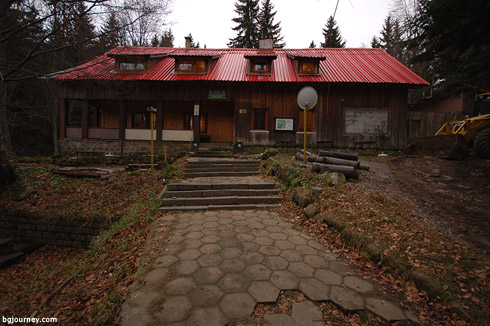
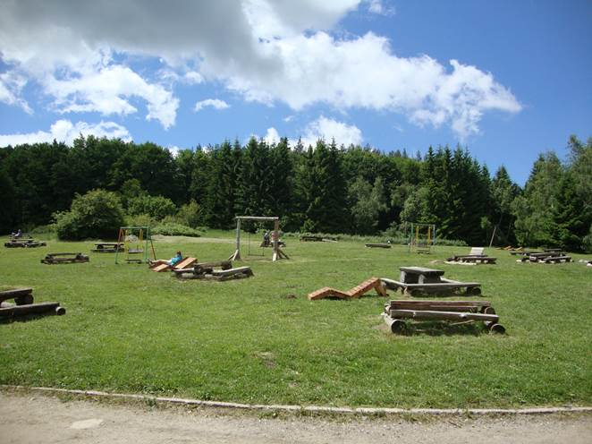
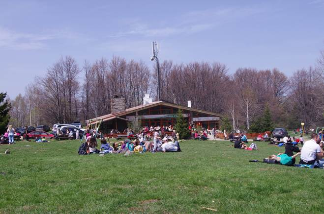

| Хижа “Момина скала” – н.в. 1501м.; Леглова база - 31легла: 1ст. х 2л. 1ст. х 3л.(WC) 1ст. х 4л.(WC) 2ст. х 5л. 2ст. х 6л. Нощувка - 14лв. За стаите със собствен санитарен възел - 15лв. WC и баня - общи. Отопление - ток /маслени радиатори/. |
 |
|  | Кухня /изключително вкусна/: Супи /шкембе, пиле, боб, леща, коприва, гъби, таратор, качамак, каша от коприва/ - 2,50лв. - 3,10лв. Скара /кебапче, кюфте, пил. пържола, пил. шишче, св. пържола, св. шишче, скумрия, карначе, наденица, кълцаница, тат. кюфте/ 1,20лв. - 5,50лв. Салати - 2,00лв. - 4,30лв. Десерти и напитки - сходни с горните цени. Телефон - 0889 276 647 Боби Желева |
| Ресторант и сладкарница "Момина скала" - н.в. 1485м.
Менюто е почти същото. Добавени са аламинути /кашк. пане, омлет със сирене, тиквички, чушки с дом. сос/ 3,00лв. - 4,00лв.
Хижата, ресторантът и сладкарницата са под едно администриране. |
 |